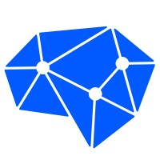
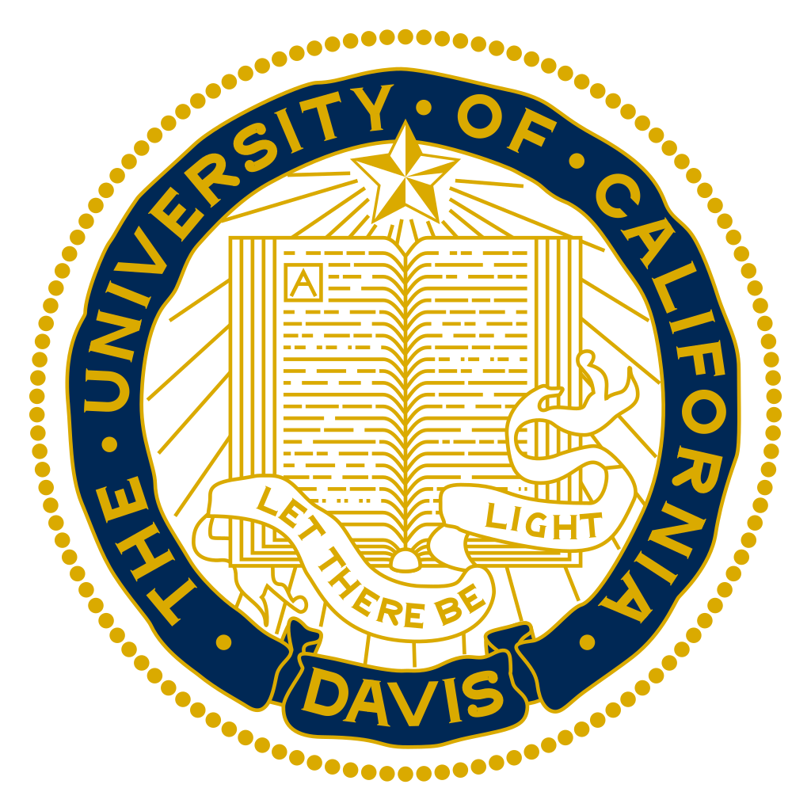
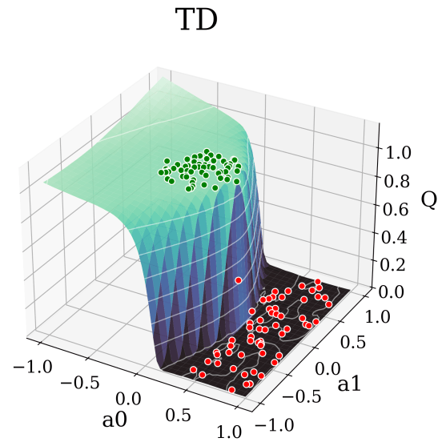
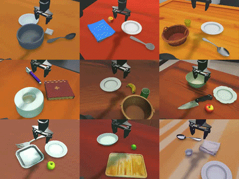
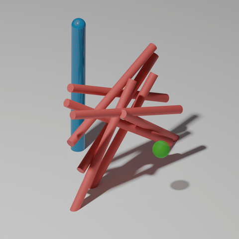
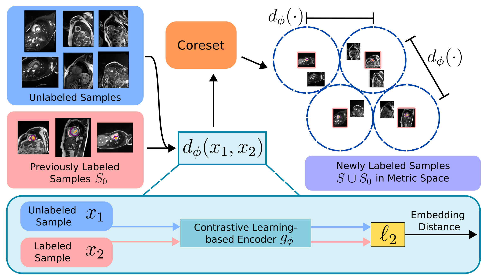
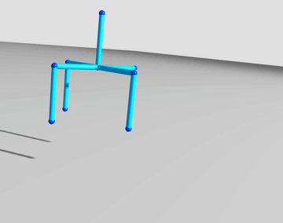
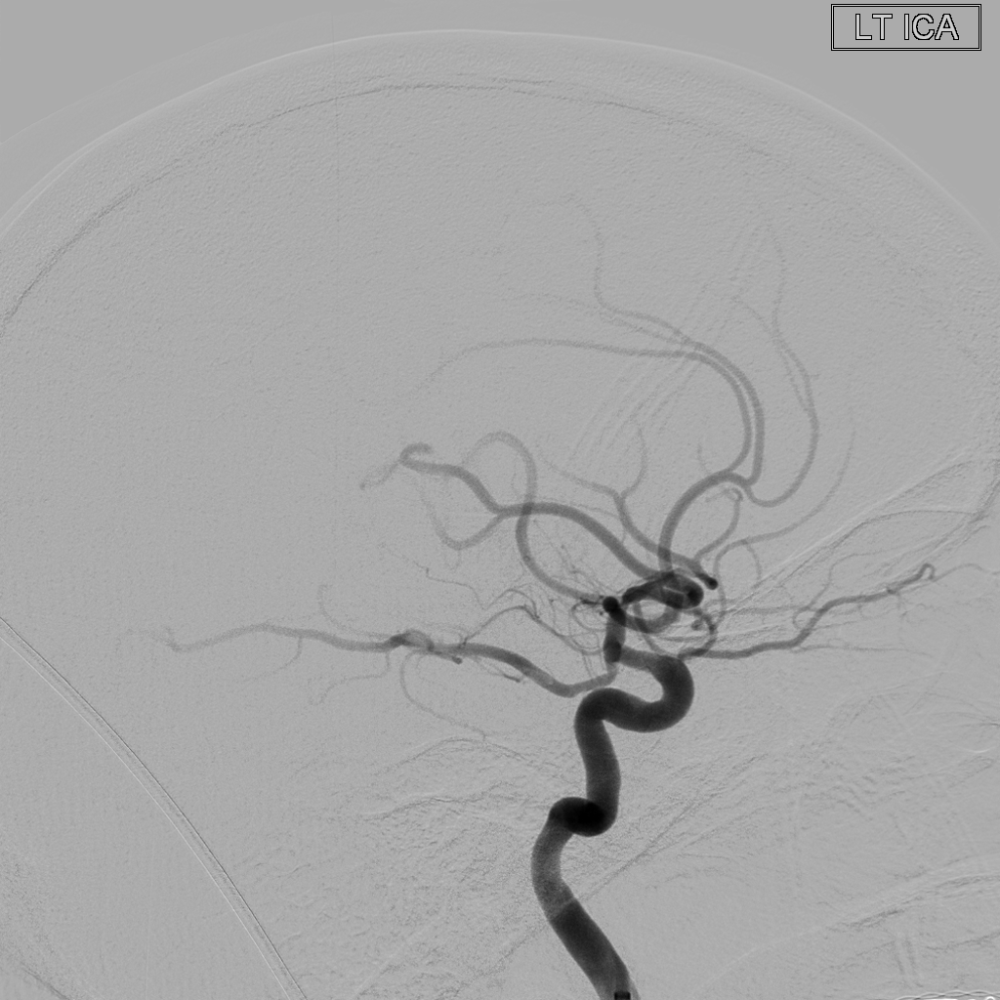
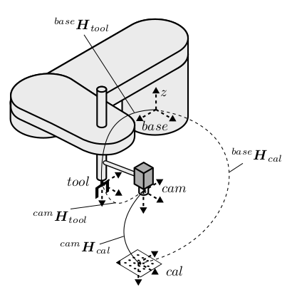
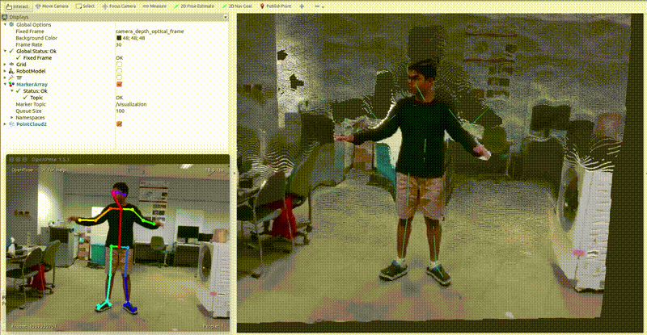

|
Andrew Sang-Jin Choi
Hi! Thanks for visiting my website ^_^
I am currently a research scientist on the General AI team at Horizon Robotics.
Before that, I obtained my Ph.D. in Computer Science at UCLA, where I was a member of the
Structures-Computer Interaction (SCI) Lab.
There, I was co-advised by Professors
M. Khalid Jawed,
Jungseock Joo, and
Demetri Terzopoulos.
During my Ph.D., my research focused on robotics, physical simulation, and perception.
In particular, I worked on developing fast, accurate simulators for soft robots and deformable structures,
as well as leveraging simulation to learn robust sim-to-real policies for robotic deformable object manipulation.
My current research focuses on developing general and scalable solutions for training physical AI.
I am particularly interested in sim-to-real RL fine-tuning and real-world RL fine-tuning of VLAs.
I love to code 🖥️. I am the main developer of the soft robotics and structures simulation framework
DisMech, which I maintain in my free time.
Website last updated on May 25, 2026.
|

|
Timeline
-
2024 - Curr

I am currently working as a
Research Scientist
on the General AI team at
Horizon Robotics
,
where I work on a broad array of robot learning problems.
I am advised by Wei Xu.
-
2021 - 2023
I graduated with a
Ph.D. in Computer Science
from the
University of California, Los Angeles (UCLA)
.
My dissertation is titled
"Simulation of Deformable Objects for Sim2Real Applications in
Robotics."
-
Summer 2021
I interned as a
Robotics Software Intern
at the
Research & Advanced Development team at
Vecna Robotics
,
where I worked on robotic manipulation, perception, and simulation
problems
in the area of autonomous warehouse robots.
I was advised by Siddharth Chhatpar.
-
2019 - 2021
I graduated with a
M.S. in Computer Science
from the
University of California, Los Angeles (UCLA)
.
My M.S. thesis is titled
"An Implicit Contact Method for Tying Discrete Elastic
Knots".
-
2018 - 2019
I worked for one year as a
Control Systems Engineer
at
Brock Solutions
. Much of my free time that year was
spent on side projects as well as prepping for grad school.
-
2014 - 2018

I graduated with a
B.S. in Mechanical Engineering
with Magna Cum Laude honors from the
University of California, Davis
.
My senior design project was
Grimdor,
an underactuated shoe tying robot.
You can find news coverage
here.
|
|
|

|
RankQ: Offline-to-Online Reinforcement Learning via Self-Supervised Action Ranking
Andrew Choi
and Wei Xu
arXiv, 2026
PDF
/
Project Page
RankQ is an offline-to-online Q-learning objective that augments temporal-difference learning with a self-supervised ranking loss.
For VLA RL fine-tuning, RankQ improves low-data regime simulation success by 42.7% and high-data regime simulation success by 13.7% over the next best method.
RankQ also enables strong sim-to-real transfer, improving real-world cube stacking success from 43.1% to 88.9% relative to the pretrained imitation baseline.
|
|

|
Scaling Sim-to-Real Reinforcement Learning for Robot VLAs with Generative 3D Worlds
Andrew Choi,
Xinjie Wang,
Zhizhong Su,
and Wei Xu
arXiv, 2026
PDF
/
Project Page
We leverage 3D world generative models and a language-driven scene designer to scalably generate diverse interactive environments for RL fine-tuning of VLA models.
RL fine-tuning across hundreds of generated scenes improves simulation success from 9.7% to 79.8% and real-world success from 21.7% to 75%.
We further show that increasing scene diversity substantially improves zero-shot generalization.
|
|

|
Rapidly Learning Soft Robot Control via Implicit Time-Stepping
Andrew Choi
and Dezhong Tong
arXiv, 2025
PDF
/
Source Code
Implicit soft-body simulation for scalable soft robot policy learning.
Parallel stepping yields up to 6× speedup in non-contact and 40× in contact-rich scenarios over existing frameworks.
Cross-simulator evaluations reveal minimal sim-to-sim gap, demonstrating substantial acceleration without loss of physical fidelity.
|

|
Learning Multi-Stage Pick-and-Place with a Legged Mobile Manipulator
Haichao Zhang,
Haonan Yu,
Le Zhao,
Andrew Choi,
Qinxun Bai,
Yiqing Yang,
and Wei Xu
IEEE Robotics and Automation Letters
(RA-L), 2025
PDF
/
Project Page
End-to-end visuomotor policy learning for sim-to-real quadruped mobile manipulation.
Policies are trained using a teacher-student framework on a multi-stage pick-and-place task and
transfer with ~80% success to real hardware.
Emergent behaviors include re-grasping and task chaining, with extensive ablations
identifying key ingredients for successful sim-to-real transfer.
|
|

|
Integrating Deep Metric Learning with Coreset for Active Learning in 3D Segmentation
Arvind Vepa,
Zukang Yang,
Andrew Choi,
Jungseock Joo,
Fabien Scalzo,
and Yizhou Sun
Conference on Neural Information Processing Systems
(NeurIPS), 2024
PDF
/
Source Code
Slice-based active learning approach for 3D segmentation.
Contrastive learning with Coreset enables metric learning by
leveraging inherent data groupings in medical imaging.
Evaluations on four datasets reveal enhanced performance over
existing active learning methods, achieving cost-efficient
low-annotation training.
|

|
Sim2Real Neural Controllers for Physics-Based Robotic Deployment of
Deformable Linear Objects
Dezhong Tong,
Andrew Choi,
Longhui Qin,
Weicheng Huang,
Jungseock Joo,
and M. Khalid Jawed
The International Journal of Robotics Research (IJRR), 2024
PDF
/
Source Code
/
Video
End-to-end pipeline for full sim-to-real robotic DLO deployment.
Physical simulations are used to train a neural controller capable of deploying rods
along a
prescribed pattern.
Scaling analysis is used to obtain a generalizable control policy with respect to
material
and geometric parameters.
|

|
Learning Neural Force Manifolds for Sim2Real Robotic Symmetrical Paper
Folding
Andrew Choi*,
Dezhong Tong*,
Demetri Terzopoulos,
Jungseock Joo,
and M. Khalid Jawed
IEEE Transactions on Automation Science and Engineering (T-ASE), 2024
(* equal contribution)
PDF
/
Source Code
/
Video
/
Oral Presentation
/
News
Coverage
End-to-end pipeline for full sim-to-real robotic paper folding.
Neural force manifolds are learned from physical simulation and are used to generate
optimal
folding trajectories.
Scaling analysis is used to obtain a generalizable control policy with respect to
material
and
geometric parameters.
|
|

|
DisMech: A Discrete Differential Geometry-based
Physical Simulator for Soft Robots and Structures
Andrew Choi,
Ran Jing,
Andrew Sabelhaus,
and M. Khalid Jawed
IEEE Robotics and Automation Letters (RA-L), 2024
PDF /
Source Code /
Video /
Oral Presentation
Full scale generalizable physical simulator capable of simulating soft physics,
frictional
contact, and continuum control.
A fully implicit formulation allows for increased computational efficiency while
maintaining
physical accuracy when compared to previous SOTA.
|

|
mBEST: Realtime Deformable Linear Object Detection Through Minimal
Bending
Energy Skeleton Pixel Traversals
Andrew Choi,
Dezhong Tong,
Brian Park,
Demetri Terzopoulos,
Jungseock Joo,
and M. Khalid Jawed
IEEE Robotics and Automation Letters (RA-L), 2023
PDF
/
Source Code & Data
/
Video
Robust and rapid instance segmentation of DLOs via skeleton pixel traversals.
Segmentations are generated on topologically corrected skeleton structures with
intersections handled
by the simple and physically insightful optimization objective of minimizing cumulative
bending energy.
|

|
A Fully Implicit Method for Robust Frictional Contact Handling in Elastic
Rods
Dezhong Tong*,
Andrew Choi*,
Jungseock Joo,
and M. Khalid Jawed
Extreme Mechanics Letters (EML), 2023
(* equal contribution)
PDF
/
Source Code
/
Video
/
Oral Presentation
Fully implicit frictional contact method for simulation of slender elastic rods.
Enforces non-penetration and capable of reproducing sticking and sliding phenomena.
Case study for flagella bundling in viscous fluid shown.
|

|
Snap Buckling in Overhand Knots
Dezhong Tong,
Andrew Choi,
Jungseock Joo,
Andy Borum,
and M. Khalid Jawed
Journal of Applied Mechanics (JAM), 2023
PDF
/
Source Code
/
Video
Study of the snap buckling process of overhand knots.
Discrete differential geometry based simulations and tabletop experiments are used to
explore the onset of buckling as a function of topology, geometry, and friction.
|

|
Preemptive Motion Planning for Human-to-Robot Indirect Placement Handovers
Andrew Choi,
M. Khalid Jawed,
and Jungseock Joo
IEEE International Conference on Robotics and Automation (ICRA), 2022
PDF
/
Project Page
/
Video
Preemptive motion planning via human object placement prediction using human pose and
gaze
as input.
Rapidly outperforms traditional wait-and-react methods for human-to-robot pick-and-place
operations.
|
|

|
Weakly-Supervised Convolutional Neural Networks for Vessel Segmentation
in
Cerebral Angiography
Arvind Vepa,
Andrew Choi,
Noor Nakhaei,
Wonjun Lee,
et al.
IEEE/CVF Winter Conference on Applications of Computer Vision (WACV), 2022
PDF
/
Source Code & Data
Weak supervision approaches for automated vessel segmentation.
Utilizes active contour models to generate weak labels and introduces low-cost
human-in-the-loop strategies that drastically reduce labelling cost while maintaining
segmentation accuracy.
|
|
|
Implicit Contact Model for Discrete Elastic Rods in Knot Tying
Andrew Choi,
Dezhong Tong,
M. Khalid Jawed,
and Jungseock Joo
Journal of Applied Mechanics (JAM), 2021
PDF
/
Source Code
/
Video
An implicit contact model for slender elastic rod simulation capable of enforcing
non-penetration via smooth penalty energy and edge-to-edge minimum distance formulation.
Sliding friction is handled semi-explicitly.
Extensive physical validation through knot tying case study.
|
|

|
Handeye Calibration Module for 4DOF Manipulators using Dual Quaternions
GitHub Repository, 2021
Source Code
Implementation of the paper "Hand-Eye Calibration of SCARA Robots" by M.
Ulrich.
Completed as part of an internship at Vecna
Robotics.
|
|

|
ROS OpenPose
GitHub Repository, 2019
Source Code
ROS wrapper for OpenPose with support for key commercial cameras used by the
robotics
community.
|
Undergraduate Robotics Projects
|

|
Duke: Voice Controlled Robot Dog
For Fun Project, 2019
Video
/
CAD
An Arduino controlled robot dog that I created while healing from a knee
surgery.
Can do simple functionalities such as sit and respond to praise.
So far, the YouTube video has amassed over 190000 views!
|

|
Grimdor: Underactuated Shot Tying Manipulator
Undergraduate Senior Design Project, 2018
Video
/
CAD
/
News
Coverage
A manipulator capable of tying shoes.
Built under the design constraints of using at most 2 motors and a $600 budget.
Won a robotics competition against Meijo
University, resulting in an all expense paid trip to Japan to present the
robot.
Was featured on several news outlets.
So far, the YouTube video has amassed over 59000 views!
|
Website source code adapted from Jon
Barron If you'd like to use my website in any way, please contact me.
|
|
{kind=link}